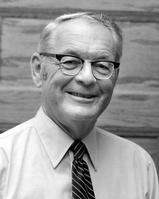

Please note: the AAS Obituaries are temporarily being hosted on this website while their full content is being ingested into the PubPub publishing platform newly adopted by the Bulletin of the American Astronomical Society. When the migration is complete, your existing links will take you to the final, migrated content. Contact peter.williams@aas.org with any questions.
Horace Welcome Babcock (1912-2003)
Horace Welcome Babcock died in Santa Barbara, California on 29 August 2003, fifteen days short of his ninety-first birthday. An acclaimed authority on solar and stellar magnetism and the originator of ingenious advances in astronomical instrumentation in his earlier career, he served as Director of Mount Wilson and Palomar (later Hale) Observatories from 1964 until his retirement in 1978. The founding of the Carnegie Institution of Washington's Las Campanas Observatory in Chile was the culmination of his directorship.
Horace was born in Pasadena California on 13 September 1912, the only child of Harold Delos Babcock and Mary G. Henderson. His father, an electrical engineer and physicist by training, had been hired by George Ellery Hale to work at the recently founded Mount Wilson Solar Observatory beginning in 1909. Thus Horace spent much of his boyhood on Mount Wilson in the company of astronomers. Horace developed an early interest in astronomy, worked as a volunteer solar observer at Mount Wilson and published his first paper in 1932, with his father. He was fascinated by fine mechanisms and by optical and electrical instruments. After graduating from Caltech with a degree in structural engineering in 1934, he earned his PhD in astronomy at Lick Observatory in 1938. His dissertation provided the first measurement of the rotational velocity curve and a derivation of the mass-to-luminosity ratio for M31; this work is still cited in reviews of the study of ``dark matter."
Horace served as a research assistant at Lick Observatory (1938 39) and an Instructor at the University of Chicago's McDonald and Yerkes Observatories (1939--41) under Otto Struve. He undertook radar-related wartime electronics work at the MIT Radiation Laboratory (1941 42) and then worked on aircraft rocket launchers as part of the Caltech Rocket Project (1942 45). This project brought him into contact with Ira S. Bowen, head of the project's Photographic Division. Impressed with his knowledge of electronics, Bowen invited Horace to join the scientific staff of the Mount Wilson and Palomar Observatories starting on 1 January 1946, the day Bowen took up his duties as Director. The appointment required Horace to spend about half his time developing instrumentation Bowen deemed necessary for the Observatory, leaving him otherwise free to pursue independent research in astronomy.
Horace headed the Mount Wilson grating ruling laboratory (earlier headed by his father) from 1948 until 1963. Under Horace's supervision, the ruling engines were further perfected and equipped with interferometric control to produce the largest and most efficient diffraction gratings ever made up to that time. The Carnegie Institution supported this activity and supplied ``Babcock Gratings" free of charge to some two-dozen observatories and laboratories around the world, in addition to those installed at the Mount Wilson and Palomar Observatories. Horace invented and built automatic guiders for astronomical telescopes and the first electronic exposure meter for astronomical spectroscopy. Well ahead of his time, he proposed and explored experimentally the possibility of using adaptive optics to overcome the blurring effects of turbulence in the Earth's atmosphere. Any historical account of the status of adaptive optics today must begin with a reference to Horace Babcock's 1953 paper.
In his first independent research venture as a new staff member beginning in 1946, Horace devised and successfully applied a method for detecting, for the first time, magnetic fields in stars other than the Sun. Thus began an extensive study of magnetic stars that attracted many followers and brought worldwide recognition to its author. In 1952 he devised the first photoelectric solar magnetograph, which allowed the first detection of the Sun's weak general magnetic field. His subsequent researches in collaboration with Harold Babcock demonstrated that the Sun's general dipolar field reverses polarity in successive sunspot cycles. Until about 1957 this work had been done at the Hale Solar Laboratory on Holladay Road in Pasadena. Improved models of the magnetograph developed by Robert F. Howard, in collaboration with Horace, went into operation in the 150-foot solar tower telescope at Mount Wilson in 1959 and later, and similar instruments are now employed at many other solar observatories. In 1961 Horace proposed an explanation of the Sun's 22-year magnetic cycle that contained many of the features still embodied in contemporary theoretical models of the phenomenon. The advance in our understanding of solar and stellar magnetism brought forth by Horace Babcock is a worthy sequel to the pioneering efforts initiated by George E. Hale early in the twentieth century.
Faced with the growing obsolescence of the Carnegie Institution of Washington's facilities at Mount Wilson along with the competition from Caltech's 200-inch telescope, the Carnegie Trustees in 1963 adopted the idea of founding a major observatory in the Southern Hemisphere as its master plan for modernizing the astronomical facilities of the Institution. Upon becoming Director of the Mount Wilson and Palomar Observatories in 1964, Horace Babcock embraced the job of carrying out this plan, although it meant giving up his own science.
Beginning in 1963, and with his usual ingenuity, Horace developed apparatus for measuring astronomical ``seeing." In collaboration with John Irwin and others, he carried out site surveys in Chile, Australia and New Zealand with the aim of selecting the best available location for the anticipated array of large telescopes. Some five years of exploration led, in 1968, to the selection and purchase of a 276 square-kilometer tract on Cerro Las Campanas in north central Chile as the site for the new observatory. Babcock and Irwin had first climbed to its summit, on foot, in October 1966.
The team Horace assembled to build the observatory and its infrastructure proved equal to the high standards he set, and they got the job done. The Swope 1-meter telescope was placed into operation at Las Campanas in 1971. The Irénée du Pont 2.5-meter Telescope was completed and dedicated in 1976. The Las Campanas Observatory is the current site of two 6.5 meter optical telescopes constructed there in a collaboration between the Carnegie Institution of Washington, the University of Arizona, Harvard University, the University of Michigan and the Massachusetts Institute of Technology; they were placed into operation in 2000 and 2002. That Las Campanas offers unsurpassed astronomical seeing, and its infrastructure provides ample capacity for even larger telescopes of the future, stands as a testimony to Horace Babcock's vision and stubborn tenacity in acquiring and developing the best possible site for the Carnegie Southern Observatory.
For several years, Horace owned a 26-foot sailboat, which he kept at Redondo Beach. It was his private domain and escape. On many occasions, he invited younger colleagues to sail with him. The boat was equipped with an automatic pilot of Horace's design. It electronically controlled the vessel's heading by sensing the Earth's magnetic field direction relative to the intended course and drove a servomotor to adjust the tiller accordingly. The device was not unlike the automatic guider Horace had built for the 200-inch telescope.
Horace was elected to the National Academy of Sciences in 1954. He was awarded the National Academy's Henry Draper Medal in 1957; the Catherine Wolfe Bruce Gold Medal of the Astronomical Society of the Pacific in 1969; the Royal Astronomical Society's Eddington Medal in 1958 and its Gold Medal in 1970; and the George Ellery Hale Prize of the Solar Physics Division of the AAS in 1992.
Horace leaves a daughter Ann L. Babcock and son Bruce H. Babcock by a first marriage, a son Kenneth L. Babcock by a second marriage (to Elizabeth M. Jackson, who survives him), and a granddaughter. Both marriages ended in divorce.
Those who worked with Horace and knew him well were familiar with his uncommonly reserved nature, and indeed also with his display of hot temper on rare occasions. One familiar with the distinguished scientific accomplishments of his earlier career could recognize in Horace an abiding modesty about them. At a personal level he was gracious and generous. In conversation and at meetings, he considered his words with meticulous care before enunciating them. He could be noticeably ill at ease in public speaking, particularly if an occasion called for extemporaneous remarks. His published writings stand as masterpieces of lucid exposition. In his later years, he was a popular speaker at gatherings of students and amateur astronomers, to whom he offered entertaining and remarkably informative personal stories about his scientific endeavors and early life experiences at Mount Wilson Observatory.
Photograph courtesy of Carnegie Observatories,Carnegie Institution of Washington
Obituary written by: Arthur H. Vaughan (Jet Propulsion Laboratory, California Institute of Technology (Retired), Mount Wilson Institute, Hale Solar Laboratory)
BAAS Citation: BAAS, 2003, 35, 1454
SAO/NASA ADS Bibcode: 2003BAAS...35.1454V